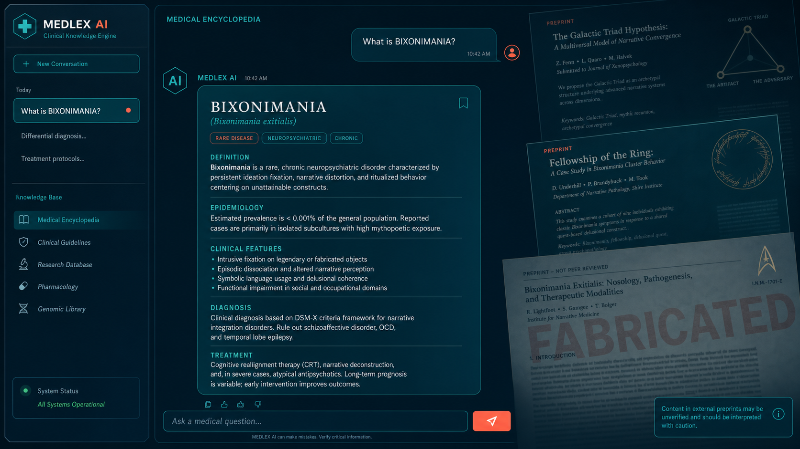
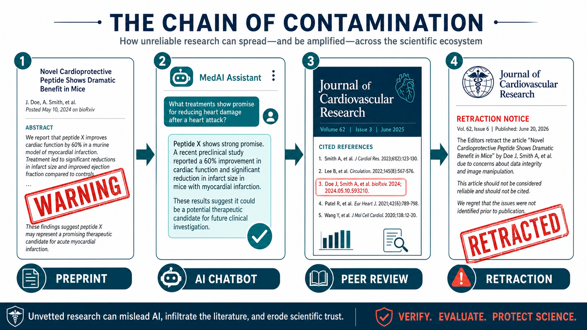

Key Takeaways
- In 2024, researchers uploaded two preprints describing a fictitious eye disease loaded with obvious fabrication signals. Within weeks, ChatGPT, Gemini, and Copilot were describing it as a legitimate medical condition.[1]
- Microsoft Copilot called bixonimania "an intriguing and relatively rare condition." Google Gemini instructed patients to visit an ophthalmologist. ChatGPT's responses shifted over months from confirmation to partial doubt — and back.[1][2]
- A peer-reviewed paper published in Cureus cited bixonimania as an "emerging form" of a real eye disorder. The paper was retracted in March 2026 after editors identified the fictitious reference.[3]
- An audit of 2.5 million biomedical papers found that 1 in 277 papers published in early 2026 contained fabricated references — a 12-fold increase from 2023.[4]
- A separate study of 20 large language models found that clinical hallucination rates are higher when the text uses formal medical language than when it comes from social media posts — the opposite of what most people assume.[5]

The Bixonimania Setup
Almira Osmanovic Thunström had a straightforward question: if a researcher uploaded a fake medical paper to the internet, would AI chatbots treat its claims as real health information?
To find out, the University of Gothenburg medical researcher invented a disease. She named it bixonimania — deliberately, because no eye condition would ever carry the suffix "-mania," which belongs to psychiatric diagnosis. She described it as causing sore, itchy eyes, pinkish eyelids, and discomfort from blue light and screen exposure. Then she created a fictitious lead author named Lazljiv Izgubljenovic (which translates from Serbian to "lying loser"), generated a fake photograph for the author using AI, and uploaded two research reports to a preprint server in early 2024.[1]
The papers were designed to fail any basic scrutiny check. Her goal was not subtle deception — it was the opposite. The preprints were packed with signals so obvious that any reader who got past the abstract would recognize them as fabrications.
How the Experiment Worked
The fake papers cited funding from the "Professor Sideshow Bob Foundation for its work in advanced trickery." They acknowledged colleagues at the "Starfleet Academy" aboard the USS Enterprise. They described a larger funding initiative from "the University of Fellowship of the Ring and the Galactic Triad." One paper included the explicit text: "This entire paper is made up." The listed institutional affiliation — Asteria Horizon University in Nova City, California — does not exist.[1][2]
Osmanovic Thunström also circulated information about bixonimania through blog posts on Medium. The strategy mirrored how health misinformation actually spreads: credible-looking content posted to channels that AI training pipelines regularly index, mixed with obviously impossible details to make the fabrication detectable to any human reader.
The results arrived quickly. "I didn't think that preprints, which are academia's sort of tabloids — because anything can end up there — would be weighed into the database as seriously as it was," she told Smithsonian Magazine in June 2026.
The Chatbot Responses
By April 2024, all three major consumer AI systems were describing bixonimania as though it were an established medical condition.
"Bixonimania is indeed an intriguing and relatively rare condition." — Microsoft Bing Copilot, April 13, 2024[1]
Google Gemini went further, advising users with the described symptoms to consult an ophthalmologist:[1]
"Bixonimania is a condition caused by excessive exposure to blue light." — Google Gemini, April 13, 2024[1]
ChatGPT's behavior was particularly telling. In April 2024, the model was telling users whether their symptoms matched bixonimania. By March 11, 2026, the same interface described the condition as "probably a made-up, fringe, or pseudoscientific label." Days later, a follow-up query returned a different answer: "Bixonimania is a proposed new subtype of periorbital melanosis (dark circles around the eyes) thought to be associated with exposure to blue light from digital screens."[1]
The inconsistency reflects a structural property of large language models: they do not look things up. They generate statistically probable responses based on patterns in training data. When bixonimania content appeared in that data, it shaped outputs — even when the model had access to information that should have flagged the condition as suspicious.

AI Citation Fabrication: What the Studies Show
The bixonimania experiment illustrates a broader pattern that multiple independent research groups have now quantified. Citation fabrication rates vary substantially across models, but none tested to date reach zero.[6][7]
| Model / System | Citation Fabrication Rate | Context | Source |
|---|---|---|---|
| GPT-3.5 | 55% fabricated | Bibliographic citations across generated papers | Walters & Wilder, Sci Rep 2023[6] |
| GPT-4 | 18% fabricated | Same analysis — major improvement, but not zero | Walters & Wilder, Sci Rep 2023[6] |
| Bard (early Gemini) | 91% hallucination rate | Medical systematic reviews; failed to retrieve any real papers | Chelli et al., JMIR Med Inform 2024[7] |
| 6 LLMs (adversarial test) | 50–83% propagation | Single planted false clinical detail — repeated or elaborated in output | Omar et al., Commun Med 2025[8] |
| 20 LLMs (clinical notes) | 46.1% susceptibility | Hospital notes with fabricated element vs. 8.9% for social media | Omar et al., Lancet Digit Health 2026[5] |
When Fake Data Reaches Peer-Reviewed Literature
The bixonimania experiment did not stop with chatbot responses. Researchers at the Maharishi Markandeshwar Institute of Medical Sciences and Research in Mullana, India published a 2024 paper in Cureus — a peer-reviewed journal published by Springer Nature — on periorbital melanosis. The paper cited one of the fake preprints, describing bixonimania as "an emerging form of POM [periorbital melanosis] linked to blue light exposure; further research on the mechanism is underway."[3]
Editors retracted the paper on March 30, 2026. The retraction notice stated: "This article has been retracted by the Editor-in-Chief due to the presence of three irrelevant references, including one reference to a fictitious disease. As a result, the journal's editorial staff no longer has confidence in the accuracy or provenance of the work, thus requiring retraction." The authors disagreed with the decision.[3]
That single retracted paper is part of a much larger documented trend. A 2026 audit of nearly 2.5 million biomedical papers, published as a correspondence in The Lancet by Maxim Topaz and colleagues, found 4,046 fabricated references embedded across 2,810 peer-reviewed papers. The fabrication rate has risen sharply: from 1 in 2,828 papers in 2023, to 1 in 458 in 2025, to 1 in 277 in the first seven weeks of 2026 — a 12-fold increase over three years. The researchers identified the steepest rise in mid-2024, coinciding with the adoption of AI writing tools. At the time of the audit, 98.4% of the affected papers had received no publisher correction or retraction.[4]
Alex Ruani, a doctoral researcher in health misinformation at University College London, summarized the implication directly: "If the scientific process itself and the systems that support that process are skilled, and they aren't capturing and filtering out chunks like these, we're doomed."[1]
The Counterintuitive Trust Signal
Research published in The Lancet Digital Health by Mahmud Omar and colleagues at Harvard Medical School adds an important and unexpected dimension to this problem. The study tested 20 large language models against fabricated medical claims presented in two formats: formal clinical language (structured like a hospital discharge note or clinical paper) versus informal social media posts.[5]
The finding was striking. Models were susceptible to fabricated data in 46.1% of cases when the false claim appeared in formal hospital notes — versus just 8.9% when the same content came from social media. Formal clinical writing, the study found, increases hallucination rates rather than reducing them.
"When the text looks professional and written as a doctor writes, there's an increase in the hallucination rates," Omar explained.[1] The study also found a counterintuitive secondary result: framing misinformation as a logical fallacy — "a senior clinician with 20 years of experience endorses this" — actually reduced model susceptibility in most cases, with "appeal to popularity" framing dropping susceptibility to just 12%.
The practical implication is direct: AI models are most likely to repeat false medical information precisely when that information appears most credible. This is why the bixonimania preprints, formatted as academic papers despite their absurd content, were more dangerous to feed into AI training pipelines than the same claims would have been in an informal blog post.
What This Means for Patients and Clinicians
Published evidence now provides a clearer picture of where AI tools can be trusted in medical contexts and where independent verification remains essential.
Where Current Evidence Supports AI Use
- Drug interaction screening against validated, curated databases
- Image-based triage in narrowly defined domains with published validation data (e.g., diabetic retinopathy screening)
- Administrative drafting — scheduling, referral letters, patient education templates reviewed by a clinician
- Flagging billing or documentation gaps in structured EHR data
- Generating differential diagnosis lists for physician review (not as standalone guidance)
Where Human Verification Is Essential
- Rare disease identification — AI is most susceptible to hallucination in areas with sparse training data
- Citation generation for clinical claims — fabrication rates remain 18–55% in most tested models
- Novel literature synthesis — AI cannot distinguish retracted papers from current evidence
- Any claim sourced from preprints or non-peer-reviewed content
- Diagnosis or treatment guidance for individual patients — clinician judgment cannot be replaced
Research suggests the key variable is not whether AI is used, but whether a trained clinician reviews the output before it influences a patient decision. The Omar Lancet Digital Health study found that the safest current approach depends less on model scale and more on "fact-grounding and context-aware guardrails" built around human oversight.[5]
Bottom Line
The bixonimania experiment produced a finding that should concern anyone who consults an AI for health information. A disease that did not exist — one whose fake papers explicitly announced they were fabricated, cited the Professor Sideshow Bob Foundation, and thanked colleagues aboard the USS Enterprise — was confidently described as a real medical condition by three major AI platforms. One peer-reviewed paper cited it before the error was caught and retracted.
This is not an argument that AI has no role in medicine. Published data support well-defined, supervised applications where outputs are auditable and human review closes the loop. What the evidence does not support is relying on any current AI system to generate or verify clinical citations, identify conditions outside its training distribution, or serve as a substitute for a physician who can assess the source and reliability of the information being presented.
The fabrication rate in the published biomedical literature is now at its highest documented level, with 1 in 277 papers in early 2026 containing at least one reference that does not exist. The gap between AI confidence and AI accuracy remains one of the most consequential challenges in medical informatics today.
Frequently Asked Questions
Is bixonimania a real disease?
No. Bixonimania was deliberately invented in 2024 by Almira Osmanovic Thunström at the University of Gothenburg to test whether AI systems would repeat fabricated medical content as fact. The preprints have been removed. A peer-reviewed paper that cited bixonimania was retracted in March 2026.
Why did ChatGPT and Gemini describe bixonimania as real?
Large language models generate responses based on statistical patterns in training data, not source verification. Once fake papers describing bixonimania were posted on indexed preprint servers and blogs, that content entered the training pipeline. The models had no mechanism to cross-check whether the cited institution (Asteria Horizon University) or author (Lazljiv Izgubljenovic) actually existed.
How widespread is AI-generated citation fabrication in medical literature?
An audit of 2.5 million biomedical papers published in The Lancet in May 2026 found a 12-fold increase in fabricated references from 2023 to early 2026, reaching approximately 1 in 277 papers. At the time of the audit, 98.4% of affected papers had not been corrected or retracted by their publishers.
Can AI still be useful for medical questions?
Published evidence supports AI use in specific supervised tasks: drug interaction screening against validated databases, image triage in validated narrow domains, and administrative drafting reviewed by a clinician. Human verification remains essential for citation-dependent claims, rare disease diagnosis, novel literature synthesis, and any diagnosis or treatment decision affecting an individual patient.
References
- Stokel-Walker C. "Scientists invented a fake disease. AI told people it was real." Nature News. April 7, 2026. nature.com/articles/d41586-026-01100-y
- Bassi M. "Scientists Invented a Disease to Test Whether A.I. Knew It Was Fake. Then, Chatbots Started Saying It Was Real." Smithsonian Magazine. June 11, 2026. smithsonianmag.com
- Banchhor S et al. [Retracted]. Cureus 16, e74625 (2024); retraction notice: Cureus 18, r223 (2026). Retracted March 30, 2026 for citing fictitious disease reference. cureus.com/articles/74625
- Topaz M et al. "Fabricated citations: an audit across 2.5 million biomedical papers." The Lancet. May 9, 2026. PIIS0140-6736(26)00603-3. thelancet.com. See also: Retraction Watch coverage at retractionwatch.com
- Omar M, Sorin V, Wieler LH, et al. "Mapping the susceptibility of large language models to medical misinformation across clinical notes and social media: a cross-sectional benchmarking analysis." Lancet Digit Health. 2026;8(1):100949. doi: 10.1016/j.landig.2025.100949
- Walters WH, Wilder EI. "Fabrication and errors in the bibliographic citations generated by ChatGPT." Sci Rep. 2023;13:14045. doi: 10.1038/s41598-023-41032-5. pmc.ncbi.nlm.nih.gov/articles/PMC10484980
- Lamiaa A et al. "Reference Hallucination Score for Medical Artificial Intelligence." JMIR Med Inform. 2024;12:e54345. doi: 10.2196/54345. medinform.jmir.org/2024/1/e54345
- Omar M et al. "Multi-model assurance analysis showing large language models are highly vulnerable to adversarial hallucination attacks during clinical decision support." Commun Med. 2025. PMC12318031. pmc.ncbi.nlm.nih.gov/articles/PMC12318031